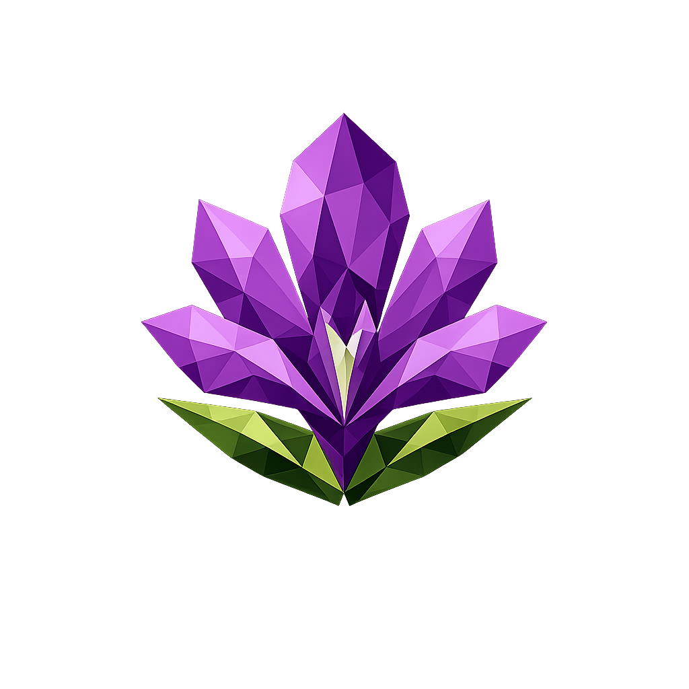

Captura el tráfico que cae en tu vulnbox, lo descompone en flows, y le da a tu equipo un panel de operación en vivo durante el CTF: ver el ataque que acaba de robar un flag, escribir la regla Suricata para frenarlo, y rebotar ese mismo exploit contra los demás teams — todo desde la misma UI.
Browse del tráfico ingestado con filtros multi-service, tag intersection, regex search. Decoders raw/hex/web/python-request. Highlights automáticos de flags leaked.
Tomá el payload de un flow enemigo, replayealo contra todos los teams en paralelo. Tabla de resultados con flag-hit por team. Descarga el script standalone para tu farm.
CRUD desde UI, templates pre-cargados, enable/disable toggle. Auto-reload via socket unix de Suricata sin docker.sock. Quick-block IP desde cualquier flow.
Vista cronológica de cada Suricata alert + cada flag-out, agrupado por (tick, src_ip, service). Filtros por range y service. Link directo al flow culpable.
Pantalla fullscreen para una TV del equipo: services grid, attack feed, top atacantes, leak counter. Auto-refresh 10s. Sin clutter, fonts grandes.
3 roles (viewer/operator/admin), rate-limit en login, append-only audit log con filtros y export CSV. Bcrypt + Flask session httpOnly. Backup script con un comando.
git clone … w4rya cd w4rya cp .env.example .env # poné W4RYA_SECRET_KEY docker compose up -d --build
Los 6 containers tardan ~3-5 min la primera vez (extension postgres + ingestor go).
docker compose run --rm api \ python /app/auth/add_user.py \ <username>
El primer user queda admin por back-compat. Para sumar más con role específico: --role operator.
# abrir http://localhost:3001 # login con tu user # /config → services, teams, # flag_regex, tick info # ya está
Sin services configurados los chips del sidebar van a estar vacíos pero el resto funciona.